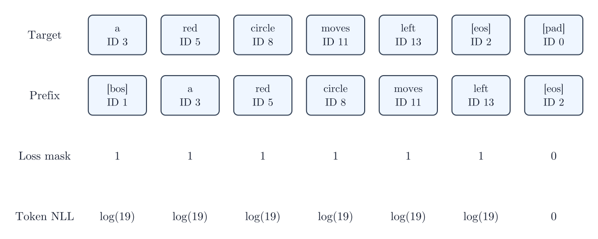
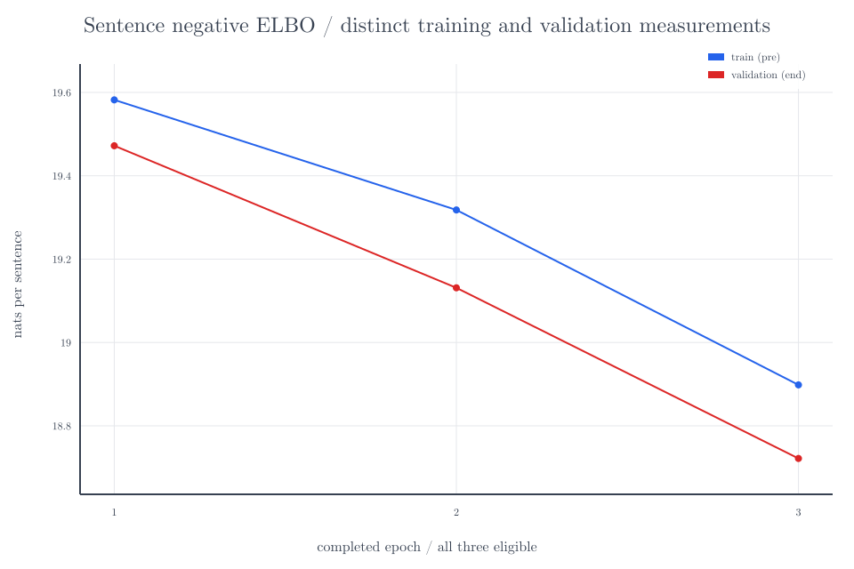
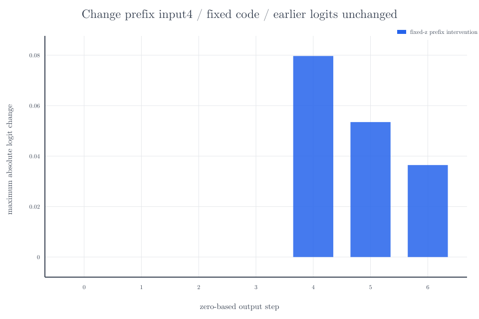
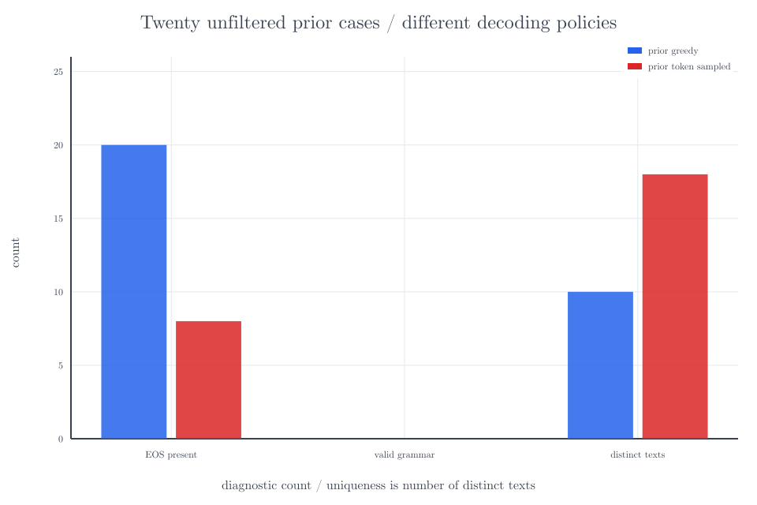

Sentence VAE: Teacher Reconstruction and Target-Free Generation
Abstract
Sentence generation turns a continuous code into a variable-length token sequence. It must predict each next token from its own previous outputs, while reconstruction can use the true previous tokens. This report compares both policies in a sentence VAE, using a compact embedding 8/GRU16/code 4 model on 432 exhaustive local grammar sentences. Three epochs perform 27 visible Adam updates; four fixed validation draws select epoch 3. Test sentence NLL 18.650350 plus KL 0.030573 gives negative ELBO 18.680923 nats/sentence. Teacher token perplexity 16.404448 is worse than the fitting-only unigram reference 15.689205. None of the 20 greedy or 20 token-sampled prior cases follows the grammar. Exact PAD checks, fixed-code causality, independent noise, unfiltered examples and a complete editable C++ program make these short-run limitations visible rather than treating teacher prediction as fluent generation.
Encode the complete sentence; decode causally at fixed code
[Bowman et al. (2016)](https://arxiv.org/abs/1511.06349) study variational sentence models with global continuous latent representations. This compact teaching adaptation uses a 19-word vocabulary, separate 8-dimensional encoder/decoder embeddings, GRU hidden width 16 and four Gaussian coordinates. It does not reproduce the paper's LSTM, dropout or KL-annealing recipe. The related posterior-collapse report compares annealing explicitly; this run keeps KL weight 1 throughout.
The encoder sees the *complete observed sentence*. At each time step it proposes a GRU state, then retains the previous state for PAD 0. EOS 2 is a normal nonzero input. Two linear heads produce mu and log variance; explicit Gaussian epsilon forms z=mu+exp(lv/2)*epsilon. The decoder begins at tanh(dense(z)), uses its own embedding/GRU, and shares a 19-token output projection across all seven steps. There is no direct encoder-state or target-token bypass.
For batch size B and length T, the two GRUs require O(B T H(E+H)) arithmetic, and the vocabulary projection adds O(B T H V), with embedding width E, hidden width H and vocabulary size V. Recurrent steps run sequentially in T. Training retains the time-step activations for BPTT; its storage grows linearly in B and T for this fixed architecture. The short run below fixes T=7, E=8, H=16 and V=19.
#include <dm/dm.hpp>
int main() {
std::filesystem::create_directories("build");
dm::graphics::Diagram d(44, 1500);
dm::graphics::DiagramNodeStyle st;
st.width = 4.8;
st.height = 2.5;
st.font_size = 20;
d.node("x", {0, 0}, "Complete sentence x\nNon-PAD encoder inputs", st)
.node("enc", {6, 0}, "Masked GRU16\nEncoder embedding8", st)
.node("q", {12, 0}, "Gaussian posterior4\nmu / log variance", st)
.node("z", {18, 0}, "Explicit sampled z\nDecoder initialization", st)
.node("teacher", {25, 4}, "Teacher decoder\nTrue previous tokens", st)
.node("score", {32, 4}, "Reconstruction scores\nNon-PAD loss", st)
.node("true", {25, 9}, "BOS then x<t\nObserved prefixes", st)
.node("free", {25, -4}, "Free decoder\nOwn previous tokens", st)
.node("ids", {32, -4}, "Emitted IDs\nGreedy or sampled", st)
.node("own", {25, -9}, "BOS then emitted IDs\nEOS -> PAD suffix", st)
.edge("x", "enc")
.edge("enc", "q")
.edge("q", "z")
.edge("z", "teacher")
.edge("z", "free")
.edge("teacher", "score")
.edge("true", "teacher")
.edge("free", "ids")
.edge("ids", "own")
.edge("own", "free")
.text(
{9, -9},
"Causality is a decoder property at FIXED z.\nThe encoder deliberately observes all of "
"x.",
20)
.save_svg("build/sequence_vae_method.svg");
}
A seven-step sentence by hand
Use “a red circle moves left [eos]” with a final PAD. Its targets are [3,5,8,11,13,2,0]; its decoder inputs must be [1,3,5,8,11,13,2]. Prefix construction shifts the targets, rather than passing the current token. The EOS target is scored, while the final PAD target contributes exactly zero. A decoder still updates on that final EOS prefix input; its raw final scores exist even though the corresponding target loss is masked.
For a zero-parameter model with uniform 19-way logits and zero posterior/noise, KL is 0 and sentence NLL is 6 log 19. This controlled arithmetic example is independent of the fitted model.
#include <dm/dm.hpp>
int main() {
namespace n = dm::nn;
namespace m = n::models;
const auto t = n::DType::Float64;
const auto tokens = n::from_vector(std::vector<int>{3, 5, 8, 11, 13, 2, 0}, {1, 7});
n::ParameterStore p(3109, t);
m::SequenceVariationalAutoencoder(p, tokens, n::zeros({1, 4}, t));
p.unflatten(std::vector<double>(p.count(), 0));
const auto out = m::SequenceVariationalAutoencoder(p, tokens, n::zeros({1, 4}, t));
if (std::abs(out.nll.item() - 6 * std::log(19.)) > 1e-12 || out.kl.item() != 0)
return 1;
std::print(
"Uniform logits: six valid targets, sentence NLL {:.12f}, KL {:.1f}, loss {:.12f}.\n",
out.nll.item(),
out.kl.item(),
out.loss.item());
const auto ids = tokens.to_vector<int>(), prefix = out.decoder_inputs.to_vector<int>();
const auto mask = out.mask.to_vector<double>(), loss = out.token_nll.to_vector<double>();
const auto words = m::SequenceVocabulary();
dm::graphics::Diagram d(48, 1500);
dm::graphics::DiagramNodeStyle st;
st.width = 2.4;
st.height = 1.5;
st.font_size = 21;
d.text({-3, 0}, "Target", 23)
.text({-3, -2.5}, "Prefix", 23)
.text({-3, -5}, "Loss mask", 23)
.text({-3, -7.5}, "Token NLL", 23);
for (int k = 0; k < 7; ++k) {
const double x = k * 3.;
d.node(
"target" + std::to_string(k), {x, 0}, words[ids[k]] + "\nID " + std::to_string(ids[k]), st)
.node(
"prefix" + std::to_string(k),
{x, -2.5},
words[prefix[k]] + "\nID " + std::to_string(prefix[k]),
st)
.text({x, -5}, std::to_string(int(mask[k])), 23)
.text({x, -7.5}, k == 6 ? "0" : "log(19)", 23);
}
d.save_svg("build/sequence_vae_prefixes.svg");
}Uniform logits: six valid targets, sentence NLL 17.666633874999, KL 0.0, loss 17.666633874999.

For each sentence b, the training objective is
This is the ordinary negative ELBO with a sampled reconstruction term. Teacher token perplexity exponentiates total token NLL divided by total non-PAD token count. It conditions on observed prefixes and a code inferred from the whole sentence, so it is not unconditional language-model perplexity. Four draws average reconstruction terms for validation/test; analytic KL is counted once because it does not depend on epsilon.
Native local grammar and complete explicit fitting
Native sequence-vae-assets exhausts 2 articles×3 colours×3 shapes×2 verbs×4 directions×3 adverb choices=432 unique sentences. The adverb is absent, quickly or slowly. Six/seven EOS-inclusive target lengths are right-padded to seven. Residue 2*((colour+shape+adverb)%3)+(article+verb+direction)%2 selects test 0, validation 1, fit 2–5: 288/72/72 disjoint combinations with balanced factor marginals. This is procedural teaching data, not a language benchmark. The loader regenerates every token, previous-target input, length, factor and source ID. Factors/IDs are audit metadata, never network inputs.
#include <dm/dm.hpp>
int main() {
const auto root = dm::datasets::prepare_example_data("sequence-vae-assets");
const auto pools = dm::nn::models::LoadSequenceVaeData(root + "/sequence_vae");
std::print(
"| pool | rows | valid targets | first source ID | first sentence "
"|\n|---|---:|---:|---:|---|\n");
for (int k = 0; k < 3; ++k) {
const auto& p = pools[k];
std::print(
"| {} | {} | {} | {} | {} |\n",
k == 0 ? "fit"
: k == 1 ? "validation"
: "test",
p.tokens.size(0),
dm::nn::sum(p.lengths).item<int>(),
p.source.to_vector<int>()[0],
dm::nn::models::SequenceText(p.tokens, 0));
}
}| pool | rows | valid targets | first source ID | first sentence |
|---|---|---|---|---|
| fit | 288 | 1920 | 1 | a red circle moves left quickly [eos] |
| validation | 72 | 480 | 3 | a red circle moves right [eos] |
| test | 72 | 480 | 0 | a red circle moves left [eos] |
Seed 3109 initializes 22 leaves/3,243 scalars, including separate embedding books. BatchOrder (288,32,3119) gives nine steps per epoch and 27 total Adam updates. Rate 0.003, moments 0.9/0.999 and epsilon 1e−8 match the source. There is no KL annealing, word dropout, gradient clipping or free-bit adjustment. Full BPTT, finite/nonzero first-gradient checks and exact zero gradients for unused/PAD embedding rows remain visible in the program.
Fresh training Gaussian banks use 3192/3193/3194. Fixed four-draw fit/validation/test banks use 3137/3163/3181. Prior codes use 3203; token uniforms use 3217. The native MidpointUniformNoise API consumes one MT19937 raw 32-bit word per value, converts it to (raw+.5)/2^32, and retains Float64 strict-open-interval values. Casting those uniforms to Float32 could round the upper endpoint to 1; categorical generation receives the original Float64 bank. Gaussian Float64 banks and Float32 casts are both saved.
All completed epochs 1–3 are eligible, excluding epoch 0. The smallest fixed four-draw validation negative ELBO selects the checkpoint. Test values never select it. Float32 per-case terms accumulate in Float64, draw then row, retaining source reduction order. Fresh model-only restore reproduces the selected score; optimizer-resume state is not saved.
#include <dm/dm.hpp>
namespace nn = dm::nn;
namespace ae {
using nn::models::SequenceDataArrays;
using nn::models::SequenceGeneration;
using nn::models::SequenceGrammarValid;
using nn::models::SequenceText;
using nn::models::SequenceVaeData;
using nn::models::SequenceVaeOutput;
void Require(bool condition, const std::string& why) {
if (!condition)
throw std::runtime_error(why);
}
void Near(double x, double y, double tolerance, const std::string& why) {
Require(std::abs(x - y) <= tolerance, why);
}
nn::Tensor Find(const nn::NamedTensors& a, const std::string& name) {
for (const auto& [key, t] : a)
if (key == name)
return t;
throw std::runtime_error(name);
}
std::vector<float> Bytes(const nn::Tensor& t) {
return t.contiguous().to_vector<float>();
}
nn::NamedTensors Arrays(const nn::ParameterStore& p) {
nn::NamedTensors out;
for (const auto& name : p.names())
out.emplace_back(name, p.at(name).detach().clone());
return out;
}
auto Snapshot(const nn::ParameterStore& p) {
return p.flatten();
}
double MaxAbsDiff(const nn::Tensor& a, const nn::Tensor& b, std::int64_t count) {
const auto x = Bytes(a), y = Bytes(b);
double result = 0;
for (std::int64_t i = 0; i < count; ++i)
result = std::max(result, std::abs(double(x[i]) - double(y[i])));
return result;
}
struct VaeNoiseBank {
nn::Tensor standard, epsilon;
};
VaeNoiseBank BetaVaeNoise(std::int64_t n, std::int64_t k, std::uint32_t seed) {
auto standard = nn::models::GaussianNoise({n, 4}, k, seed);
return {standard, nn::cast(standard, nn::DType::Float32)};
}
nn::Tensor BetaVaeNoiseAt(const VaeNoiseBank& b, std::int64_t k) {
return nn::select(b.epsilon, 0, k).contiguous();
}
inline nn::NamedTensors SequenceFields(const SequenceVaeOutput& o) {
return {
{"decoder_inputs", o.decoder_inputs},
{"encoder_state", o.encoder_state},
{"encoder_states", o.encoder_states},
{"mu", o.mu},
{"log_variance", o.log_variance},
{"z", o.z},
{"decoder_initial", o.decoder_initial},
{"decoder_states", o.decoder_states},
{"logits", o.logits},
{"probability", o.probability},
{"predicted_ids", o.predicted_ids},
{"mask", o.mask},
{"token_nll", o.token_nll},
{"nll", o.nll},
{"kl", o.kl},
{"correct", o.correct},
{"valid_tokens", o.valid_tokens},
{"loss", o.loss}};
}
void Warm(nn::ParameterStore& p) {
nn::NoGradGuard guard;
nn::models::SequenceVariationalAutoencoder(
p, nn::from_vector(std::vector<int>(7, 3), {1, 7}), nn::zeros({1, 4}));
Require(p.size() == 22 && p.count() == 3243, "source census22/3243");
}
SequenceVaeOutput
Evaluate(nn::ParameterStore& p, const nn::Tensor& tokens, const nn::Tensor& noise) {
nn::NoGradGuard guard;
auto out = nn::models::SequenceVariationalAutoencoder(p, tokens, noise);
for (auto* t :
{&out.decoder_inputs,
&out.encoder_state,
&out.encoder_states,
&out.mu,
&out.log_variance,
&out.z,
&out.decoder_initial,
&out.decoder_states,
&out.logits,
&out.probability,
&out.predicted_ids,
&out.mask,
&out.token_nll,
&out.nll,
&out.kl,
&out.correct,
&out.valid_tokens,
&out.loss}) {
*t = t->contiguous();
if (t->dtype() == nn::DType::Float32)
for (float v : t->to_vector<float>())
Require(std::isfinite(v), "all18 fields finite");
}
return out;
}
nn::models::SequenceGeneration Generate(
nn::ParameterStore& p,
const nn::Tensor& z,
bool sample = false,
const nn::Tensor& uniforms = {}) {
nn::NoGradGuard guard;
return nn::models::SequenceGenerate(p, z, sample, uniforms);
}
std::pair<nn::Tensor, nn::Tensor>
Teacher(nn::ParameterStore& p, const nn::Tensor& z, const nn::Tensor& inputs) {
nn::NoGradGuard guard;
auto out = nn::models::SequenceTeacher(p, z, inputs);
return {out.logits.contiguous(), out.probability.contiguous()};
}
std::vector<double>
SequenceVaeScore(nn::ParameterStore& p, const nn::Tensor& tokens, const VaeNoiseBank& bank) {
double nll = 0, kl = 0, correct = 0, valid = 0;
const auto n = tokens.size(0), samples = bank.epsilon.size(0);
for (std::int64_t k = 0; k < samples; ++k) {
auto out = Evaluate(p, tokens, BetaVaeNoiseAt(bank, k));
const auto a = out.nll.to_vector<float>(), c = out.correct.to_vector<float>(),
v = out.valid_tokens.to_vector<float>(), d = out.kl.to_vector<float>();
for (std::int64_t b = 0; b < n; ++b) {
nll += a[b];
correct += c[b];
valid += v[b];
if (k == 0)
kl += d[b];
}
}
const double m = double(n) * double(samples);
return {nll / m, kl / n, nll / m + kl / n, std::exp(nll / valid), correct / valid};
}
nn::Tensor ExtraPaddingState(nn::ParameterStore& p, const nn::Tensor& tokens) {
nn::NoGradGuard guard;
return nn::models::SequenceEncoder(p, tokens).state.contiguous();
}
inline nn::NamedTensors CheckGradients(
const nn::ParameterStore& store,
const std::vector<nn::Tensor>& gradients,
const std::string& finite,
const std::string& nonzero) {
nn::NamedTensors out;
Require(gradients.size() == store.size(), "one gradient per parameter");
for (std::size_t i = 0; i < gradients.size(); ++i) {
Require(gradients[i].defined(), nonzero);
double norm = 0;
for (float v : gradients[i].contiguous().to_vector<float>()) {
Require(std::isfinite(v), finite);
norm += double(v) * v;
}
Require(norm > 0, nonzero);
out.emplace_back(store.names()[i], gradients[i]);
}
return out;
}
} // namespace ae
namespace check {
using ae::Near;
using ae::Require;
} // namespace check
using ae::Require;
namespace {
namespace nn = datamunge::nn;
std::vector<int> GenerationStats(const nn::Tensor& ids) {
int ended = 0, valid = 0;
std::set<std::string> unique;
const auto v = ids.to_vector<int>();
for (std::int64_t b = 0; b < ids.size(0); ++b) {
bool done = false;
for (int t = 0; t < 7; ++t) {
const int token = v[b * 7 + t];
check::Require(token >= 0 && token < 19, "generated token in vocabulary");
if (done)
check::Require(token == 0, "EOS output suffix must be PAD");
if (token == 2)
done = true;
}
ended += done;
valid += ae::SequenceGrammarValid(ids, b);
unique.insert(ae::SequenceText(ids, b));
}
return {ended, valid, int(unique.size())};
}
void Add(nn::NamedTensors& out, const std::string& prefix, const nn::NamedTensors& fields) {
for (const auto& [key, value] : fields)
out.emplace_back(prefix + key, value);
}
nn::NamedTensors Fields(const ae::SequenceGeneration& g) {
return {{"ids", g.ids}, {"logits", g.logits}, {"probability", g.probability}, {"ended", g.ended}};
}
void Run(
const std::filesystem::path& data,
const std::filesystem::path& root,
int epochs,
const std::string& init) {
auto pools = nn::models::LoadSequenceVaeData(data.string());
std::filesystem::create_directories(root);
std::filesystem::copy_file(
data / "manifest.json",
root / "data_manifest.json",
std::filesystem::copy_options::overwrite_existing);
std::filesystem::copy_file(
data / "vocabulary.txt",
root / "vocabulary.txt",
std::filesystem::copy_options::overwrite_existing);
nn::save_npz((root / "data.npz").string(), ae::SequenceDataArrays(pools));
std::vector<ae::VaeNoiseBank> noise{
ae::BetaVaeNoise(288, 4, 3137), ae::BetaVaeNoise(72, 4, 3163), ae::BetaVaeNoise(72, 4, 3181)},
training;
auto prior_noise = ae::BetaVaeNoise(20, 1, 3203);
nn::NamedTensors fixed{
{"prior_standard", prior_noise.standard}, {"prior_epsilon", prior_noise.epsilon}};
for (int split = 0; split < 3; ++split) {
const std::string name = split == 0 ? "fit" : split == 1 ? "validation" : "test";
fixed.emplace_back(name + "_standard", noise[split].standard);
fixed.emplace_back(name + "_epsilon", noise[split].epsilon);
}
nn::save_npz((root / "fixed_noise.npz").string(), fixed);
for (int epoch = 1; epoch <= epochs; ++epoch) {
training.push_back(ae::BetaVaeNoise(288, 1, 3191 + epoch));
nn::save_npz(
(root / ("train_noise_epoch" + std::to_string(epoch) + ".npz")).string(),
{{"standard", training.back().standard}, {"epsilon", training.back().epsilon}});
}
nn::ParameterStore model(3109);
ae::Warm(model);
nn::OptimizerConfig config;
config.kind = nn::OptimizerKind::Adam;
nn::Optimizer optimizer(model, .003, config);
if (!init.empty())
model.load(init);
check::Require(
model.count() == 3243 && model.size() == 22,
"small embedding8/GRU16/latent4 sentence VAE census");
nn::save_npz((root / "initial_arrays.npz").string(), ae::Arrays(model));
nn::BatchOrder order(288, 32, 3119);
std::ofstream history(root / "history.tsv"), batches(root / "batches.tsv");
history.precision(17);
history
<< "epoch\ttrain_preupdate_negative_elbo\tvalidation_sequence_nll\tvalidation_kl\tvalidation_"
"negative_elbo\t"
"validation_teacher_reconstruction_token_perplexity\tvalidation_teacher_token_accuracy\n";
batches << "epoch\tstep\trow\tsource_id\n";
const auto fit_source = pools[0].source.to_vector<int>();
const auto best_path = (root / "best.npz").string();
double best = std::numeric_limits<double>::infinity();
int selected = 0, step = 0;
const auto started = std::chrono::steady_clock::now();
for (int epoch = 1; epoch <= epochs; ++epoch) {
order.begin_epoch();
auto epsilon = ae::BetaVaeNoiseAt(training[epoch - 1], 0);
double sum = 0;
int seen = 0;
for (;;) {
auto rows = order.next();
if (rows.empty())
break;
auto input = nn::take_rows(pools[0].tokens, rows), e = nn::take_rows(epsilon, rows);
if (step == 0) {
nn::save_npz((root / "first_batch.npz").string(), {{"tokens", input}, {"epsilon", e}});
auto gradients = ae::CheckGradients(
model,
nn::grad(
nn::models::SequenceVariationalAutoencoder(model, input, e).loss,
model.parameters()),
"all GRU BPTT gradients finite",
"all22sentence VAE tensors receive derivatives");
for (const auto& [name, row] : std::vector<std::pair<std::string, int>>{
{"encoder_embedding", 0},
{"encoder_embedding", 1},
{"decoder_embedding", 0},
{"decoder_embedding", 2}})
for (float v : nn::select(ae::Find(gradients, name), 0, row).to_vector<float>())
check::Near(v, 0, 0, "PAD/unused BOS or post-EOS embedding gradients exactly zero");
nn::save_npz((root / "first_gradients.npz").string(), gradients);
nn::save_npz(
(root / "first_forward.npz").string(),
ae::SequenceFields(ae::Evaluate(model, input, e)));
}
// All actual learning is visible: forward, sentence objective, full BPTT, Adam.
const auto net = nn::models::SequenceVariationalAutoencoder(model, input, e);
sum += double(rows.size()) * net.loss.item<float>();
const auto gradients = nn::grad(net.loss, model.parameters());
Require(gradients.size() == 22, "all22 parameter gradients");
for (const auto& g : gradients)
for (double v : g.to_vector<double>())
Require(std::isfinite(v), "finite BPTT derivative");
optimizer.step(gradients);
seen += int(rows.size());
for (auto row : rows)
batches << epoch << '\t' << step << '\t' << row << '\t' << fit_source[row] << '\n';
if (step == 0)
nn::save_npz((root / "first_update_arrays.npz").string(), ae::Arrays(model));
++step;
}
check::Require(seen == 288, "all288fit sentences once per epoch");
auto score = ae::SequenceVaeScore(model, pools[1].tokens, noise[1]);
history << epoch << '\t' << sum / seen;
for (double value : score)
history << '\t' << value;
history << '\n';
nn::save_npz(
(root / ("epoch" + std::to_string(epoch) + "_arrays.npz")).string(), ae::Arrays(model));
if (score[2] < best) {
best = score[2];
selected = epoch;
model.save(best_path); // four-draw validation negative ELBO selects
}
}
const double seconds =
std::chrono::duration<double>(std::chrono::steady_clock::now() - started).count();
nn::ParameterStore deployed(3109);
ae::Warm(deployed);
deployed.load(best_path); // fresh sentence VAE model-only restore
check::Near(
ae::SequenceVaeScore(deployed, pools[1].tokens, noise[1])[2],
best,
1e-8,
"restored selected sequence score");
const auto before = ae::Snapshot(deployed);
nn::NamedTensors output;
for (int split = 0; split < 3; ++split) {
const std::int64_t n = pools[split].tokens.size(0);
const std::string name = split == 0 ? "fit" : split == 1 ? "validation" : "test";
auto mean = ae::Evaluate(deployed, pools[split].tokens, nn::zeros({n, 4}));
check::Require(nn::equal_bits(mean.z, mean.mu), "epsilon0 gives z=mu");
check::Require(
nn::equal_bits(mean.decoder_inputs, pools[split].inputs),
"graph decoder input exactly BOS plus previous target");
Add(output, name + "_mean_greedy_", Fields(ae::Generate(deployed, mean.z)));
Add(output, name + "_mean_", ae::SequenceFields(mean));
const auto lengths = pools[split].lengths.to_vector<int>(),
tokens = pools[split].tokens.to_vector<int>();
for (int k = 0; k < 4; ++k) {
auto f = ae::Evaluate(deployed, pools[split].tokens, ae::BetaVaeNoiseAt(noise[split], k));
check::Require(
nn::equal_bits(f.mu, mean.mu) && nn::equal_bits(f.encoder_state, mean.encoder_state),
"Gaussian noise does not change sentence encoding");
const auto valid = f.valid_tokens.to_vector<float>(),
token_nll = f.token_nll.to_vector<float>();
for (std::int64_t b = 0; b < n; ++b) {
check::Near(valid[b], lengths[b], 0, "mask includes EOS,excludes PAD");
for (int t = 0; t < 7; ++t)
if (tokens[b * 7 + t] == 0)
check::Near(token_nll[b * 7 + t], 0, 0, "padding has exactly zero reconstruction loss");
}
Add(output, name + "_draw" + std::to_string(k) + "_", ae::SequenceFields(f));
}
}
auto test = ae::Evaluate(deployed, pools[2].tokens, ae::BetaVaeNoiseAt(noise[2], 0)),
repeat = ae::Evaluate(deployed, pools[2].tokens, ae::BetaVaeNoiseAt(noise[2], 0)),
other = ae::Evaluate(deployed, pools[2].tokens, ae::BetaVaeNoiseAt(noise[2], 1));
check::Require(
nn::equal_bits(test.probability, repeat.probability),
"fixed-noise teacher probabilities repeat bitexact");
check::Require(
!nn::equal_bits(test.z, other.z) && !nn::equal_bits(test.probability, other.probability),
"Gaussian samples affect latent and teacher decoder");
check::Require(
nn::equal_bits(ae::Teacher(deployed, test.z, pools[2].inputs).second, test.probability),
"fixed-z prefix-only decoder exactly matches teacher evaluation");
auto single = ae::Evaluate(
deployed,
nn::take_rows(pools[2].tokens, {0}),
nn::take_rows(ae::BetaVaeNoiseAt(noise[2], 0), {0}));
const double parity = ae::MaxAbsDiff(single.probability, test.probability, 7 * 19);
check::Require(parity < 2e-6, "sequence single/batch parity");
std::vector<int> padded(72 * 8, 0);
{
const auto v = pools[2].tokens.to_vector<int>();
for (int b = 0; b < 72; ++b)
for (int t = 0; t < 7; ++t)
padded[b * 8 + t] = v[b * 7 + t];
}
auto padded_tokens = nn::from_vector(padded, {72, 8});
auto extra = ae::ExtraPaddingState(deployed, padded_tokens);
check::Require(
nn::equal_bits(extra, test.encoder_state),
"appending an extra PAD leaves encoded state BITEXACT");
nn::save_npz(
(root / "padding_probe.npz").string(),
{{"tokens8", padded_tokens}, {"encoder_state8", extra}});
auto probe_z = nn::take_rows(test.z, {0}), prefix = nn::take_rows(pools[2].inputs, {0});
auto changed_v = prefix.to_vector<int>();
changed_v[4] = changed_v[4] == 5 ? 6 : 5;
auto changed = nn::from_vector(changed_v, {1, 7});
auto original = ae::Teacher(deployed, probe_z, prefix).first.to_vector<float>(),
altered = ae::Teacher(deployed, probe_z, changed).first.to_vector<float>();
double earlier = 0, later = 0;
for (int t = 0; t < 7; ++t)
for (int w = 0; w < 19; ++w) {
const double delta = std::abs(double(original[t * 19 + w]) - altered[t * 19 + w]);
(t < 4 ? earlier : later) = std::max(t < 4 ? earlier : later, delta);
}
check::Require(
earlier == 0 && later > 1e-6,
"future decoder input cannot affect earlier token logits at FIXED z");
nn::save_npz(
(root / "causality_probe.npz").string(),
{{"z", probe_z},
{"inputs", prefix},
{"changed_inputs", changed},
{"logits", nn::from_vector(original, {1, 7, 19})},
{"changed_logits", nn::from_vector(altered, {1, 7, 19})}});
auto prior_z = ae::BetaVaeNoiseAt(prior_noise, 0),
token_uniforms = nn::models::MidpointUniformNoise({20, 7}, 3217);
auto prior_greedy = ae::Generate(deployed, prior_z),
prior_sampled = ae::Generate(deployed, prior_z, true, token_uniforms);
auto zero_gen = ae::Generate(deployed, nn::zeros({20, 4}));
const double latent_effect = ae::MaxAbsDiff(prior_greedy.logits, zero_gen.logits, 20 * 7 * 19);
check::Require(
latent_effect > 1e-5, "free decoder logits structurally depend on sentence latent");
auto posterior_greedy = ae::Generate(deployed, test.z);
Add(output, "test_posterior_greedy_", Fields(posterior_greedy));
nn::NamedTensors prior{{"z", prior_z}, {"token_uniforms", token_uniforms}};
Add(prior, "greedy_", Fields(prior_greedy));
Add(prior, "sampled_", Fields(prior_sampled));
Add(prior, "zero_", Fields(zero_gen));
nn::save_npz((root / "prior.npz").string(), prior);
auto greedy_stats = GenerationStats(prior_greedy.ids),
sampled_stats = GenerationStats(prior_sampled.ids);
GenerationStats(ae::Find(output, "test_mean_greedy_ids"));
GenerationStats(posterior_greedy.ids);
check::Require(
before == ae::Snapshot(deployed),
"teacher/padding/causality/free generation leave all parameters unchanged");
nn::save_npz((root / "outputs.npz").string(), output);
nn::save_npz((root / "model_arrays.npz").string(), ae::Arrays(deployed));
const auto fit_mask =
nn::expand_dims(nn::cast(nn::not_equal(pools[0].tokens, 0.), nn::DType::Float32), 2);
const auto count_tensor =
nn::cast(nn::sum(nn::one_hot(pools[0].tokens, 19) * fit_mask, {0, 1}), nn::DType::Int32);
const auto unigram_count = count_tensor.to_vector<int>();
const int fit_tokens = nn::sum(count_tensor).item<int>();
const auto unigram_probability =
((nn::cast(count_tensor, nn::DType::Float64) + .5) / (double(fit_tokens) + 9.5))
.to_vector<double>();
double baseline_nll = 0;
int test_tokens = 0;
for (int token : pools[2].tokens.to_vector<int>())
if (token) {
baseline_nll -= std::log(unigram_probability[token]);
++test_tokens;
}
nn::save_npz(
(root / "unigram_baseline.npz").string(),
{{"fit_counts", nn::from_vector(unigram_count, {19})},
{"probabilities", nn::from_vector(unigram_probability, {19})}});
auto score = ae::SequenceVaeScore(deployed, pools[2].tokens, noise[2]);
std::ofstream meta(root / "metrics.json");
meta.precision(17);
meta << "{\"parameters\":3243,\"tensors\":22,\"epochs\":" << epochs << ",\"updates\":" << step
<< ",\"selected_epoch\":" << selected
<< ",\"mc_samples\":4,\"vocabulary\":19,\"maximum_steps\":7,\"test_sequence_nll\":"
<< score[0] << ",\"test_kl\":" << score[1] << ",\"test_negative_elbo\":" << score[2]
<< ",\"test_teacher_reconstruction_token_perplexity\":" << score[3]
<< ",\"test_teacher_token_accuracy\":" << score[4]
<< ",\"fit_only_unigram_test_sequence_nll\":" << baseline_nll / 72
<< ",\"fit_only_unigram_test_token_perplexity\":" << std::exp(baseline_nll / test_tokens)
<< ",\"prior_greedy_eos_count\":" << greedy_stats[0]
<< ",\"prior_greedy_grammar_valid_count\":" << greedy_stats[1]
<< ",\"prior_greedy_unique_count\":" << greedy_stats[2]
<< ",\"prior_sampled_eos_count\":" << sampled_stats[0]
<< ",\"prior_sampled_grammar_valid_count\":" << sampled_stats[1]
<< ",\"prior_sampled_unique_count\":" << sampled_stats[2]
<< ",\"single_batch_max_error\":" << parity << ",\"causal_earlier_max_effect\":" << earlier
<< ",\"causal_later_max_effect\":" << later
<< ",\"latent_generation_logit_max_effect\":" << latent_effect
<< ",\"training_seconds\":" << seconds << "}\n";
std::ofstream table(root / "examples.tsv");
table << "case\tsource_id\toriginal\tteacher_argmax\tfree_mean_greedy\tfree_posterior_greedy\n";
const auto test_source = pools[2].source.to_vector<int>();
for (int k = 0; k < 10; ++k) {
const int b = k * 71 / 9;
auto truth = ae::SequenceText(pools[2].tokens, b),
teacher = ae::SequenceText(ae::Find(output, "test_mean_predicted_ids"), b),
free = ae::SequenceText(ae::Find(output, "test_mean_greedy_ids"), b),
post = ae::SequenceText(posterior_greedy.ids, b);
table << k << '\t' << test_source[b] << '\t' << truth << '\t' << teacher << '\t' << free << '\t'
<< post << '\n';
}
std::ofstream prior_table(root / "prior_examples.tsv");
prior_table << "case\tgreedy\tgreedy_eos\tgreedy_grammar_valid\tsampled\tsampled_eos\tsampled_"
"grammar_valid\n";
const auto greedy_ended = prior_greedy.ended.to_vector<int>(),
sampled_ended = prior_sampled.ended.to_vector<int>();
for (int b = 0; b < 20; ++b) {
auto g = ae::SequenceText(prior_greedy.ids, b), s = ae::SequenceText(prior_sampled.ids, b);
prior_table << b << '\t' << g << '\t' << greedy_ended[b] << '\t'
<< ae::SequenceGrammarValid(prior_greedy.ids, b) << '\t' << s << '\t'
<< sampled_ended[b] << '\t' << ae::SequenceGrammarValid(prior_sampled.ids, b)
<< '\n';
}
Require(
bool(meta) && bool(table) && bool(prior_table) && bool(history) && bool(batches),
"complete sentence VAE evidence");
std::print(
"| selected epoch | test sequence NLL | KL | negative ELBO | teacher token PPL | teacher "
"accuracy | unigram NLL | unigram PPL |\n|---:|---:|---:|---:|---:|---:|---:|---:|\n| {} | "
"{:.9f} | {:.9f} | {:.9f} | {:.9f} | {:.9f} | {:.9f} | {:.9f} |\n",
selected,
score[0],
score[1],
score[2],
score[3],
score[4],
baseline_nll / 72,
std::exp(baseline_nll / test_tokens));
}
} // namespace
int main() {
try {
const auto cache = dm::datasets::prepare_example_data("sequence-vae-assets");
Run(std::filesystem::path(cache) / "sequence_vae", "build/sequence_vae", 3, "");
return 0;
} catch (const std::exception& e) {
std::cerr << e.what() << '\n';
return 1;
}
}| selected epoch | test sequence NLL | KL | negative ELBO | teacher token PPL | teacher accuracy | unigram NLL | unigram PPL |
|---|---|---|---|---|---|---|---|
| 3 | 18.650349945 | 0.030573014 | 18.680922959 | 16.404447576 | 0.204166667 | 18.353152521 | 15.689204717 |
The program preserves every original archive, complete history/batch TSVs, exact vocabulary and provenance JSON. Its fitting-only unigram reference counts only non-PAD fitting targets, adds 0.5 to each of the 19 vocabulary bins, and normalizes by 1920+9.5. It consumes no held-out counts. Tensor count/smoothing operations retain the original counts/probabilities exactly; Float64 token-log accumulation retains the original NLL. This simple unconditional-token reference is not a claim to match the VAE's structured generative model.
Learning curve and the stronger reference
#include <dm/dm.hpp>
int main() {
std::ifstream f("build/sequence_vae/history.tsv");
std::string header;
std::getline(f, header);
std::vector<double> epoch, train, validation;
int e;
double loss, nll, kl, elbo, ppl, accuracy;
while (f >> e >> loss >> nll >> kl >> elbo >> ppl >> accuracy) {
epoch.push_back(e);
train.push_back(loss);
validation.push_back(elbo);
}
if (epoch.size() != 3)
return 1;
auto p = dm::graphics::RPlot::create();
p.lines(epoch, train, "train (pre)", dm::RGBA{37, 99, 235}, 2)
.points(epoch, train, "", dm::RGBA{37, 99, 235}, 4)
.lines(epoch, validation, "validation (end)", dm::RGBA{220, 38, 38}, 2)
.points(epoch, validation, "", dm::RGBA{220, 38, 38}, 4)
.title("Sentence negative ELBO / distinct training and validation measurements")
.x_label("completed epoch / all three eligible")
.y_label("nats per sentence")
.x_ticks({1, 2, 3}, {"1", "2", "3"})
.save_svg("build/sequence_vae_validation.svg");
}
Epoch 3 has test sentence NLL 18.650350, KL 0.030573 and negative ELBO 18.680923 nats/sentence. Teacher token accuracy is 0.204167. The fitted VAE's teacher token perplexity 16.404448 is worse than the fitting-only smoothed unigram reference 15.689205; their sentence NLLs are 18.650350 and 18.353153 respectively. Neither conditioning on true prefixes nor fitting a latent path ensures that this short run beats a simple reference.
What the causality and PAD controls actually test
At a fixed code, change only the decoder input at zero-based column 4. Earlier logits at columns 0–3 must remain exactly unchanged. Later logits should change. This tests the causal prefix decoder. If one instead changed the sentence and re-encoded it, z could change and influence earlier decoder logits; that is a different experiment.
#include <dm/dm.hpp>
int main() {
namespace n = dm::nn;
const auto a = n::load_npz("build/sequence_vae/causality_probe.npz");
auto find = [&](const std::string& key) {
for (const auto& [k, v] : a)
if (k == key)
return v;
throw std::runtime_error(key);
};
const auto x = find("logits").to_vector<float>(), y = find("changed_logits").to_vector<float>();
std::vector<double> step, effect;
for (int t = 0; t < 7; ++t) {
double delta = 0;
for (int w = 0; w < 19; ++w)
delta = std::max(delta, std::abs(double(x[t * 19 + w]) - y[t * 19 + w]));
if (t < 4 && delta != 0)
return 1;
step.push_back(t);
effect.push_back(delta);
}
auto p = dm::graphics::RPlot::create();
p.bars(step, effect, "fixed-z prefix intervention", dm::RGBA{37, 99, 235}, .7)
.title("Change prefix input4 / fixed code / earlier logits unchanged")
.x_label("zero-based output step")
.y_label("maximum absolute logit change")
.x_ticks(step, {"0", "1", "2", "3", "4", "5", "6"})
.save_svg("build/sequence_vae_causality.svg");
std::print(
"Earlier columns0-3: exact zero effect. Largest later effect {:.12f}.\n",
*std::max_element(effect.begin(), effect.end()));
}Earlier columns0-3: exact zero effect. Largest later effect 0.079681035131.

Appending an eighth PAD column leaves every final encoder state byte-identical; the saved padding_probe.npz retains the actual 72-case check. Single-row/batch probabilities agree with maximum error 0. Fixed-noise calls repeat exactly; changing epsilon changes z and decoder probabilities while leaving mu and encoder states fixed. A prefix-only teacher decoder from that same z reproduces full teacher probabilities exactly. All diagnostics leave parameters unchanged. These are implementation/connectivity checks, not evidence of useful semantics.
Teacher argmax is not free reconstruction
The following are all ten prespecified held-out rows floor(k*71/9). Teacher argmax uses true prefixes and z=mu. Free greedy(mu) uses no target prefixes; free posterior greedy uses one matched posterior draw. Neither free greedy output is a posterior predictive mean. Repetition, missing roles and special tokens remain visible.
#include <dm/dm.hpp>
int main() {
std::ifstream f("build/sequence_vae/examples.tsv");
std::string line;
std::getline(f, line);
std::print(
"| case | source ID | original | teacher argmax / true prefixes | free greedy(mu) | free "
"posterior greedy |\n|---:|---:|---|---|---|---|\n");
int count = 0;
while (std::getline(f, line)) {
for (char& c : line)
if (c == '\t')
c = '|';
std::print("|{}|\n", line);
++count;
}
return count == 10 ? 0 : 1;
}| case | source ID | original | teacher argmax / true prefixes | free greedy(mu) | free posterior greedy |
|---|---|---|---|---|---|
| 0 | 0 | a red circle moves left [eos] | a a [eos] | a a [eos] | moves [eos] |
| 1 | 47 | a red square rolls down slowly [eos] | a a [eos] | a a [eos] | the the moves [eos] |
| 2 | 95 | a green circle rolls down slowly [eos] | a a [eos] | a a [eos] | a a a [eos] |
| 3 | 141 | a green triangle rolls down [eos] | a a [eos] | a a [eos] | moves [eos] |
| 4 | 189 | a blue square rolls down [eos] | a a [eos] | a a [eos] | moves down down [eos] |
| 5 | 234 | the red circle rolls up [eos] | a a [eos] | a a [eos] | a a [eos] |
| 6 | 283 | the red triangle rolls up quickly [eos] | a a [eos] | a a [eos] | a a [eos] |
| 7 | 331 | the green square rolls up quickly [eos] | a a [eos] | a a [eos] | a a [eos] |
| 8 | 379 | the blue circle rolls up quickly [eos] | a a [eos] | a a [eos] | a a [eos] |
| 9 | 428 | the blue triangle rolls up slowly [eos] | a a [eos] | a a [eos] | a [eos] |
The free mean-code reconstructions repeat “a a [eos]”. Teacher predictions can exploit their supplied prefixes, so a teacher-reconstruction row cannot be interpreted as a target-free generation. The model has little training and makes no fluency or semantic-representation claim.
All twenty prior cases: greedy versus actual token sampling
Both columns start from the same prior codes z~N(0,I). Greedy chooses argmax at every step; ancestral token sampling compares each supplied uniform with a Float64 renormalized token CDF using cdf<=u ties, capped at ID 18. After the first emitted EOS, IDs become PAD. Raw scores continue for all seven steps. PAD/BOS emitted before EOS and maximum-length/no-EOS failures are not filtered. Later sampled prefixes are the sampled column's own emitted history.
#include <dm/dm.hpp>
int main() {
namespace n = dm::nn;
namespace m = n::models;
const auto a = n::load_npz("build/sequence_vae/prior.npz");
auto find = [&](const std::string& key) {
for (const auto& [k, v] : a)
if (k == key)
return v;
throw std::runtime_error(key);
};
std::vector<double> counts_g, counts_s;
for (const std::string name : {"greedy", "sampled"}) {
const auto ids = find(name + "_ids");
const auto ended = find(name + "_ended").to_vector<int>();
int eos = 0, valid = 0;
std::set<std::string> unique;
for (int b = 0; b < 20; ++b) {
eos += ended[b];
valid += m::SequenceGrammarValid(ids, b);
unique.insert(m::SequenceText(ids, b));
}
auto& counts = name == "greedy" ? counts_g : counts_s;
counts = {double(eos), double(valid), double(unique.size())};
}
auto p = dm::graphics::RPlot::create();
p.bars({.84, 1.84, 2.84}, counts_g, "prior greedy", dm::RGBA{37, 99, 235}, .28)
.bars({1.16, 2.16, 3.16}, counts_s, "prior token sampled", dm::RGBA{220, 38, 38}, .28)
.x_ticks({1, 2, 3}, {"EOS present", "valid grammar", "distinct texts"})
.y_limits(0, 26)
.title("Twenty unfiltered prior cases / different decoding policies")
.x_label("diagnostic count / uniqueness is number of distinct texts")
.y_label("count")
.save_svg("build/sequence_vae_prior_counts.svg");
std::print(
"| case | prior greedy | EOS | valid grammar | actual ancestral sample | EOS | valid grammar "
"|\n|---:|---|---:|---:|---|---:|---:|\n");
for (int b = 0; b < 20; ++b) {
const auto g = m::SequenceText(find("greedy_ids"), b),
s = m::SequenceText(find("sampled_ids"), b);
const auto ge = find("greedy_ended").to_vector<int>()[b],
se = find("sampled_ended").to_vector<int>()[b];
std::print(
"| {} | {}{} | {} | {} | {}{} | {} | {} |\n",
b,
g,
ge ? "" : " [MAX7,NOEOS]",
ge,
m::SequenceGrammarValid(find("greedy_ids"), b) ? 1 : 0,
s,
se ? "" : " [MAX7,NOEOS]",
se,
m::SequenceGrammarValid(find("sampled_ids"), b) ? 1 : 0);
}
std::print(
"\nGreedy: EOS {}, grammar {}, distinct {}. Token-sampled: EOS {}, grammar {}, distinct "
"{}.\n",
int(counts_g[0]),
int(counts_g[1]),
int(counts_g[2]),
int(counts_s[0]),
int(counts_s[1]),
int(counts_s[2]));
}| case | prior greedy | EOS | valid grammar | actual ancestral sample | EOS | valid grammar |
|---|---|---|---|---|---|---|
| 0 | moves moves moves [eos] | 1 | 0 | slowly a the rolls moves slowly [eos] | 1 | 0 |
| 1 | moves moves moves [eos] | 1 | 0 | triangle quickly [bos] a a quickly rolls [MAX7,NOEOS] | 0 | 0 |
| 2 | moves moves the [eos] | 1 | 0 | triangle moves circle blue triangle blue [pad] [MAX7,NOEOS] | 0 | 0 |
| 3 | a [eos] | 1 | 0 | moves left right red rolls a [eos] | 1 | 0 |
| 4 | the moves [eos] | 1 | 0 | [eos] | 1 | 0 |
| 5 | a [eos] | 1 | 0 | a left square a the red right [MAX7,NOEOS] | 0 | 0 |
| 6 | [eos] | 1 | 0 | red square [eos] | 1 | 0 |
| 7 | a a a [eos] | 1 | 0 | blue blue square square [bos] green [pad] [MAX7,NOEOS] | 0 | 0 |
| 8 | left [eos] | 1 | 0 | down [bos] blue left left blue blue [MAX7,NOEOS] | 0 | 0 |
| 9 | a [eos] | 1 | 0 | [eos] | 1 | 0 |
| 10 | a a a [eos] | 1 | 0 | moves quickly green right square slowly rolls [MAX7,NOEOS] | 0 | 0 |
| 11 | moves moves moves [eos] | 1 | 0 | green slowly triangle up green triangle quickly [MAX7,NOEOS] | 0 | 0 |
| 12 | a a a [eos] | 1 | 0 | rolls circle rolls square slowly blue slowly [MAX7,NOEOS] | 0 | 0 |
| 13 | a a a [eos] | 1 | 0 | triangle circle green rolls quickly moves [pad] [MAX7,NOEOS] | 0 | 0 |
| 14 | a a a a [eos] | 1 | 0 | a up square right [eos] | 1 | 0 |
| 15 | moves moves [eos] | 1 | 0 | the left right the left the a [MAX7,NOEOS] | 0 | 0 |
| 16 | a a [eos] | 1 | 0 | [eos] | 1 | 0 |
| 17 | moves moves [eos] | 1 | 0 | circle green [bos] moves slowly moves triangle [MAX7,NOEOS] | 0 | 0 |
| 18 | a [eos] | 1 | 0 | [bos] blue [eos] | 1 | 0 |
| 19 | a a [eos] | 1 | 0 | square blue right quickly left [pad] green [MAX7,NOEOS] | 0 | 0 |
Greedy: EOS 20, grammar 0, distinct 10. Token-sampled: EOS 8, grammar 0, distinct 18.

Twelve token-sampled cases reach all seven steps without EOS. None of either policy's twenty prior cases satisfies the grammar. The prior-versus-zero latent intervention changes raw logits by up to 1.237717271, establishing structural latent dependence; hard prefix changes can also propagate that difference. This does not establish useful sentence information. Short training, the stronger unigram reference, repeated reconstructions and unfiltered failures limit what can be concluded from this single seed.
Reproduction and independent checks
Run all C++ blocks in order with the matching native library. Preparation uses the canonical shared cache and records the exact local grammar; no Python preparation or external checkout is involved. The complete source-derived program preserves all 20 original archives/1,454,190 array values, every history/batch/example TSV, vocabulary and non-timing JSON value. The optional NumPy development oracle checks all 3,243 first BPTT derivatives and exact first Adam, all eighteen saved endpoints, all three validation checkpoints, Gaussian banks, prior token uniforms, greedy/ancestral generation, PAD/causality probes and the unigram reference:
python3 scripts/check_sequence_variational_autoencoder.py docs/mepml/nn/2_autoencoders/2.2_variational_autoencoders/build/sequence_vae --json build/nn-report-conversion/sequence_report/oracle.jsonThis checks generated artifacts and does not fit or prepare data. Source initialization, ordering and floating operation order are retained; external-framework trajectory parity is not claimed. The editable C++ program is the experiment implementation.